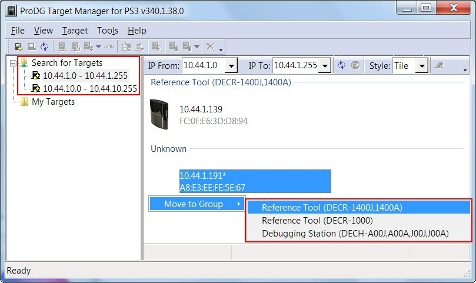
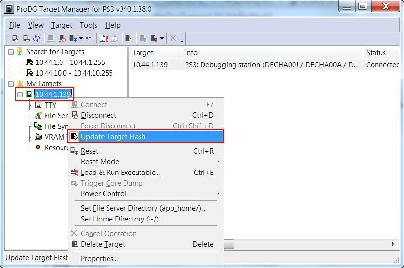
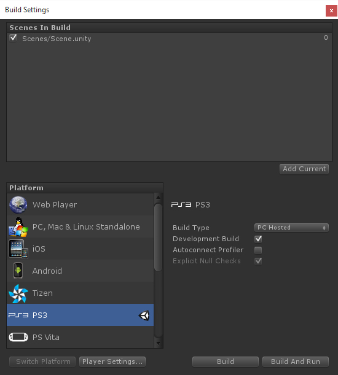

Playstation3: Building & Running
The following is a step-by-step guide to build and run a new project on the PS3.
Before you start
- Make sure your copy of Windows is up to date including Service Packs.
- You are a registered PS3 developer.
- You have followed the instructions in the PS3 Setup or PS3 Setup for Source Licensees page depending on your license for a seat setup checklist
- You have read the Application Development Procedure documentation : https://ps3.scedev.net/docs/ps3-en,Development_Process-Overview,Application_Development_Procedure/1
Add the Target PS3 to ProDG Target Manager
(If you have already done this you can continue to the next step)
- Make sure the PS3 is switched on and has network access.
- Open the Target Manager Application.
- On the left pane, under the Search for Targets item, you will see the sub-networks that the Target Manager has identified. For example: 10.44.10.0 - 10.44.10.255
- Select the sub-network to which your device is connected. The Target Manager will automatically search for devices in the IP range of the sub-network. If it can't be found in the sub-network, try others.
- Once you have found your PS3 device, right click on it and select "Move to Group". Choose the correct group depending if it is a Reference or Debugging station.
- The device will be added to the left pane under "My Targets". If you would like to rename this device, you can select it and go to "Properties"
- If your hardware configuration changes, you will need to repeat the steps to add the devices.

Update the PS3 Firmware to match the SDK
(If you have already done this you can continue to the next step)
- Make sure you have the correct version of the SDK as stated in PS3 Setup.
- Select the Target Device in the ProDG Target Manager.
- RIght click the Target Device and select Connect.
- Right Click on Device and select Update Target Flash
Firmware location *For a PS3 Reference Tool: <PATH_TO_PS3_SDK>\target\updater\ref-tool\PS3UPDAT.PUP.XXX.XXX *For PS3 Debugging station: <PATH_TO_PS3_SDK>\target\updater\debugging_station\PS3UPDAT.PUP.XXX.XXX
Press OK. Wait for PS3 to Complete the process. You can see the status in the ProDG window by selecting the target in the left pane.
- Select the Target Device in the ProDG Target Manager and set the Reset Mode to Debug.
- Right Click the Target Device and click on Reset. You should see on the top left corner of the screen connected to the PS3 the version of the firmware installed.

Build the PS3 Player
Let's now build a PS3 version of the project as before. This time it will create a player that will be executed on the PS3.
- Create a New Project
- Save the new scene that Unity will create automatically.
- Open the Build Settings window: Menu -> “File” -> “Build Settings”
- Add the scene to the “Scenes in Build” pane by either dragging from the Project View or clicking on “Add Current”
- Select PS3 as the Platform and press "Switch Platform"
- Select "PC Hosted" as the "Build Type".
- Click on "Build & Run".
- Unity should automatically connect to the ProDG Target Manager and load the PS3 binary.
- The PS3 application should be running on your PS3.
